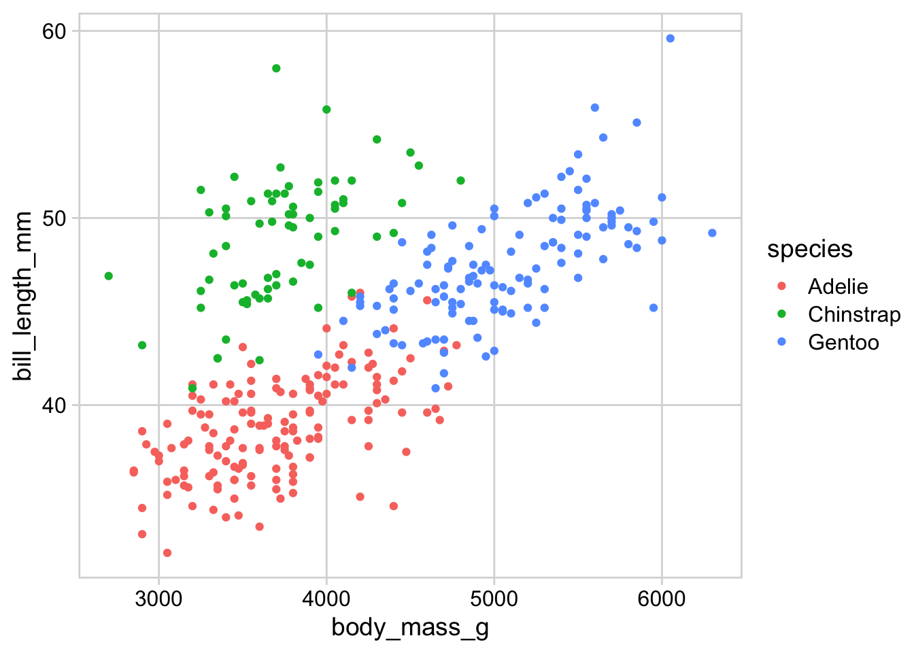
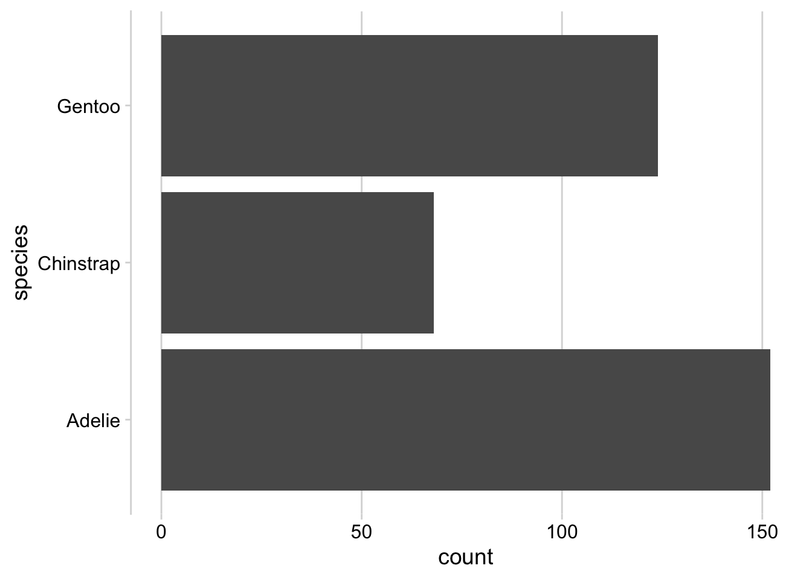
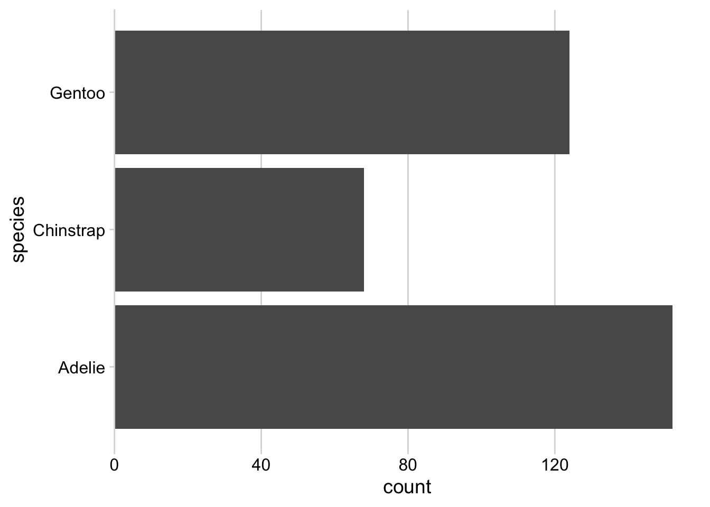
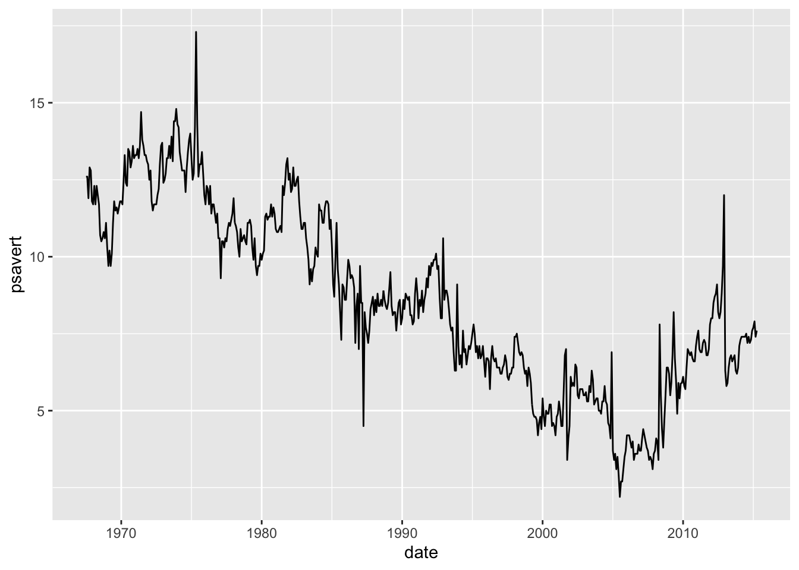
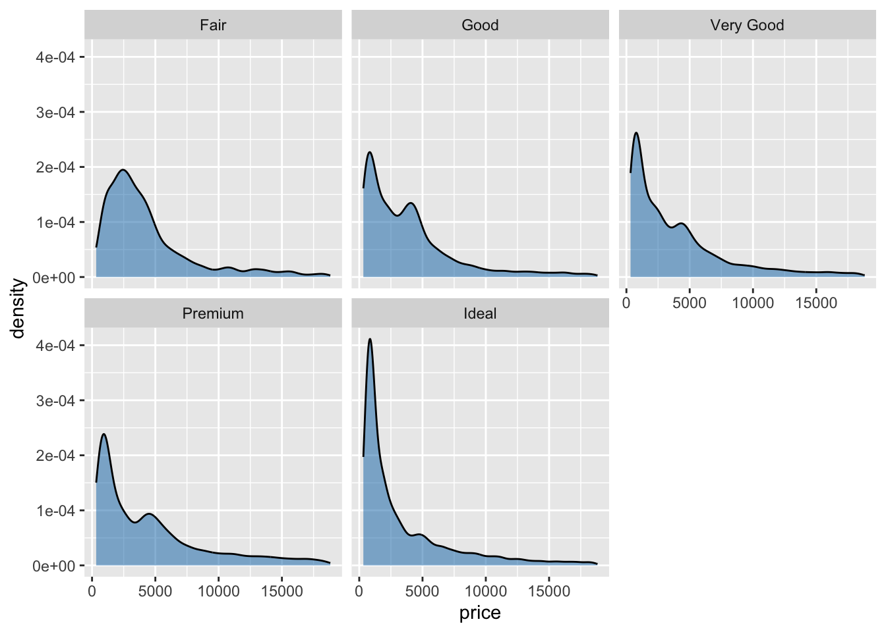
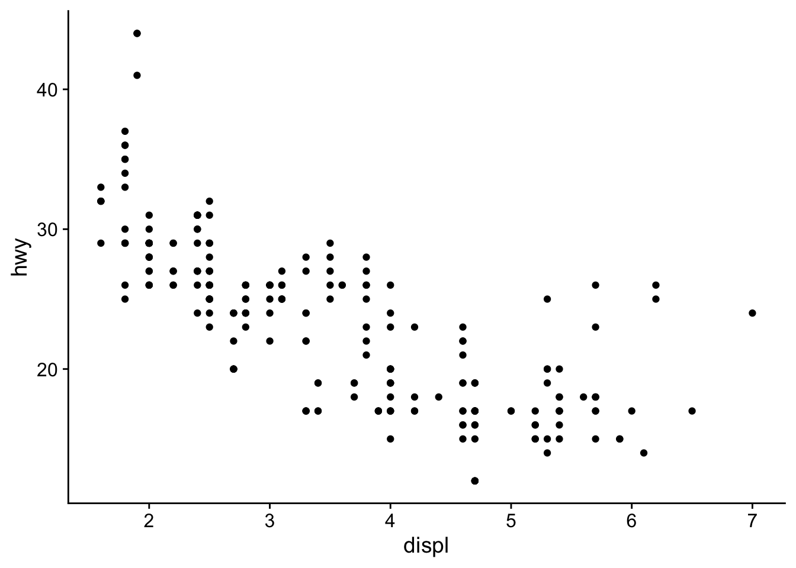
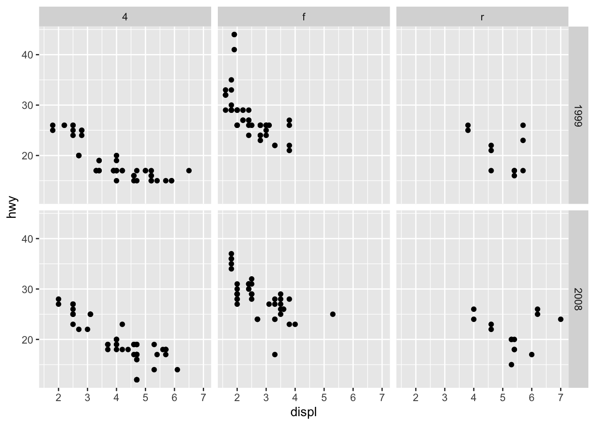
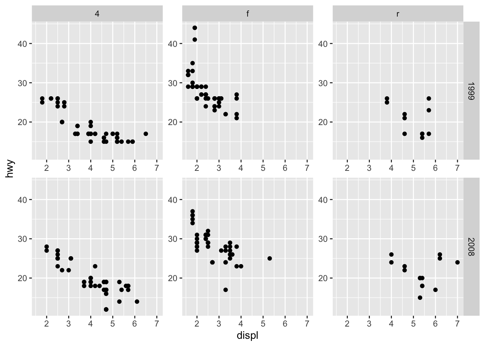
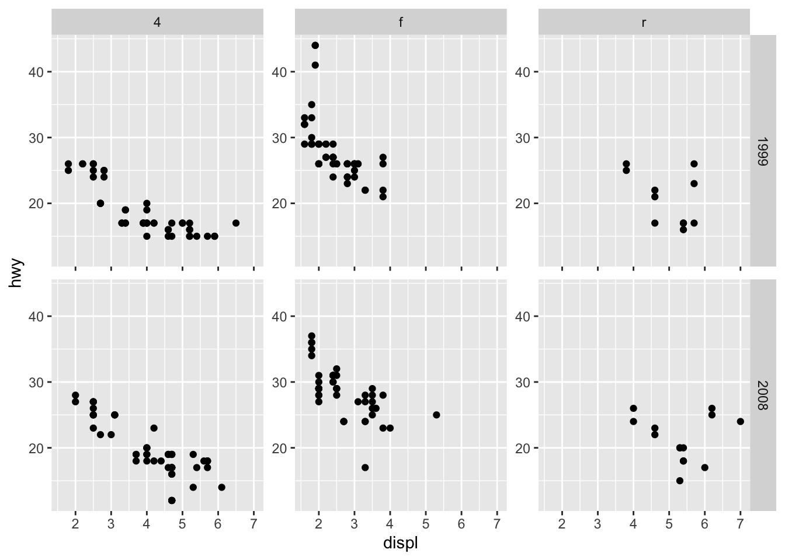
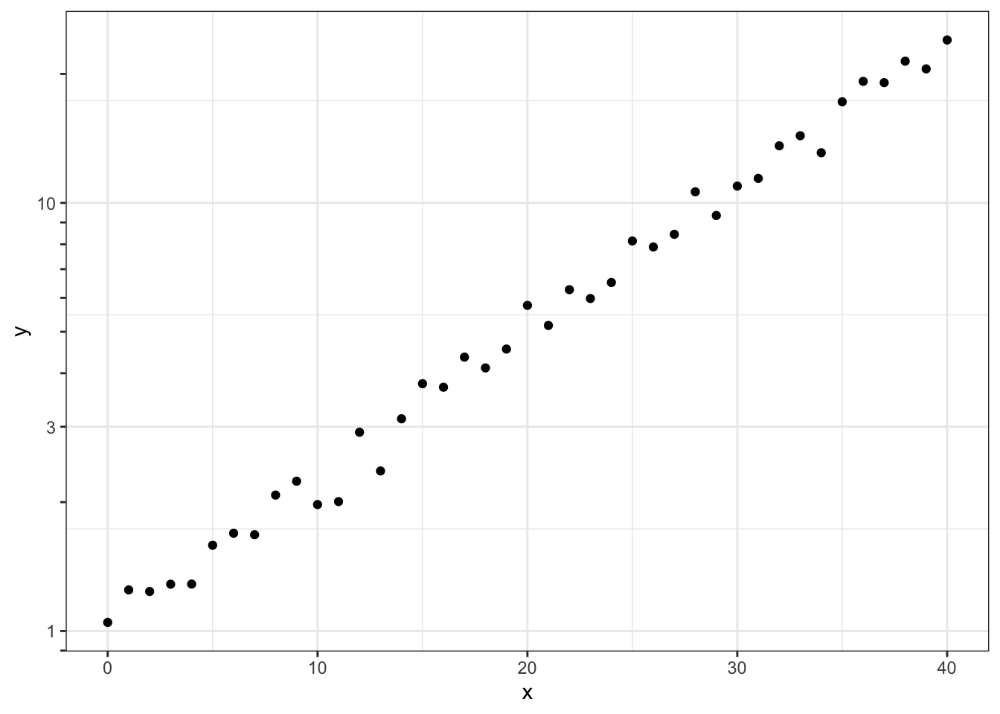

# Run this command to install the required packages.
# You need to do this only once.
install.packages(
c(
"tidyverse", "cowplot", "palmerpenguins", "gapminder"
)
)Effective Data Visualization with ggplot2
Plot design with themes and axes
Required packages
Install the required packages:
1. Plot themes and axis expansions
The cowplot package contains a set of themes that are all consistent with each other and work for different styles of plots. I have found from experience making tens of thousands of plots that there isn’t one single theme that works for all plots.
My themes follow a set of uniform design choices:
- Larger default font sizes
- No minor grid lines shown by default
- Light-gray grid lines that are unintrusive
- Black axis labels that are high contrast and easy to read
You don’t have to agree with my design choices or use my themes, but I hope that the issues I’m bringing up here will help you picking the right theme for your plots
Let’s make a simple plot and apply the various theme functions.
library(tidyverse)
library(palmerpenguins) # for `penguins` dataset
library(cowplot) # for theme functions
p <- ggplot(penguins) +
aes(body_mass_g, bill_length_mm, color = species) +
geom_point(na.rm = TRUE)
p
Classic style with axis lines and no grid:
p + theme_half_open()
Minimal grid:
p + theme_minimal_grid()
Minimal grid, horizontal lines only:
p + theme_minimal_hgrid()
Minimal grid, vertical lines only:
p + theme_minimal_vgrid()
The horizontal and vertical grids are useful for plots that have a primary data direction:
ggplot(penguins) +
geom_bar(aes(x = species)) + theme_minimal_hgrid()
ggplot(penguins) +
geom_bar(aes(y = species)) + theme_minimal_vgrid()
There are also two convenience functions, background_grid() and panel_border(), that make it easy to add/remove/customize the background grid or the panel border of a plot. The same effect can be achieved with theme() but may require a little more mental effort.
Example 1: Classic style with axis lines but now with grid added.
p + theme_half_open() + background_grid() 
Example 2: Plot with background grid and panel border.
p + theme_minimal_grid() + panel_border() 
Panel borders will in general be necessary in faceted plots, as otherwise the facets are not clearly separated and seem to run into each other.
p <- ggplot(penguins) +
aes(body_mass_g, bill_length_mm) +
geom_point(na.rm = TRUE) +
facet_wrap(~species)
p + theme_minimal_grid(12)
p + theme_minimal_grid(12) + panel_border('grey40')
Some themes work poorly with the default ggplot2 axis expansion, which adds some extra space on both sides of each axis. In particular for density plots and bar charts, this can lead to an ugly space between the axis line and the plotted data and should be disabled.
p <- ggplot(penguins) +
aes(x = bill_length_mm, fill = species) +
geom_density(na.rm = TRUE, alpha = 0.7) +
theme_minimal_hgrid()
p
p +
scale_y_continuous(
expand = expansion(mult = c(0, 0.05))
)
p <- ggplot(penguins) +
geom_bar(aes(y = species)) +
theme_minimal_vgrid()
p
p +
scale_x_continuous(
expand = expansion(mult = c(0, 0.05))
)
Exercises
Add appropriate themes and axis expansions to the following plots.
ggplot(economics) +
aes(date, psavert) +
geom_line()
ggplot(diamonds, aes(price)) +
geom_density(fill = "#0072B280") +
facet_wrap(~cut)
library(gapminder)
gapminder |>
filter(
year == 2007,
continent == "Americas"
) |>
mutate(
country = fct_reorder(country, lifeExp)
) |>
ggplot(aes(lifeExp, country)) +
geom_point()
ggplot(mtcars) +
aes(hp, mpg) +
geom_point()
2. New axis features in ggplot2 3.5.0
In ggplot2 3.5.0, the axis rendering system was refactored, and this has allowed for a broader range of axis styling features.
First, we can now draw truncated axis lines as in base R.
p <- ggplot(mpg, aes(displ, hwy)) +
geom_point() +
theme_half_open()
# default rendering of full axis lines
p
# capped axes; try also options "upper" and "lower"
p + guides(
x = guide_axis(cap = "both"),
y = guide_axis(cap = "both")
)
Second, we now have more flexibility over whether or not axis ticks and labels are shown on individual axes in faceted plots.
p <- ggplot(mpg, aes(displ, hwy)) +
geom_point()
# default ggplot2 style, no ticks or labels on internal facets
p + facet_grid(year ~ drv)
# both ticks and labels on all axes on all facets
p + facet_grid(year ~ drv, axes = "all")
# ticks on all axes on all facets, but labels only on y axes
p + facet_grid(year ~ drv, axes = "all", axis.labels = "all_y")
For logarithmic axes, there is a new guide guide_axis_logticks() that places minor ticks with log spacing.
# made-up data that follows exponential growth
exp_data <- tibble(x = 0:40) |>
mutate(
y = exp(0.08 * x + 0.1 * rnorm(length(x)))
)
ggplot(exp_data, aes(x, y)) +
geom_point() +
theme_bw() +
scale_y_log10(
guide = guide_axis_logticks(
# make major and minor ticks all the same length
long = 1,
mid = 1,
short = 1
)
)
However, as you can see, the axis ticks don’t line up with the minor grid lines. Therefore, it is best to just turn off the minor grid lines.
ggplot(exp_data, aes(x, y)) +
geom_point() +
theme_bw() +
scale_y_log10(
guide = guide_axis_logticks(
# make major and minor ticks all the same length
long = 1,
mid = 1,
short = 1
)
) +
theme(
panel.grid.minor = element_blank()
)Exercises
Convert this plot to base-R style with capped axes.
ggplot(penguins) +
aes(body_mass_g, bill_length_mm, color = species) +
geom_point(na.rm = TRUE) +
theme_half_open()
In a previous exercise you styled this plot. See if you can improve your design with the new axis options for faceted plots.
ggplot(diamonds, aes(price)) +
geom_density(fill = "#0072B280") +
facet_wrap(~cut)
Adjust the minor grid lines in this plot to match the log ticks.
ggplot(exp_data, aes(x, y)) +
geom_point() +
theme_bw() +
scale_y_log10(
guide = guide_axis_logticks(
# make major and minor ticks all the same length
long = 1,
mid = 1,
short = 1
)
)